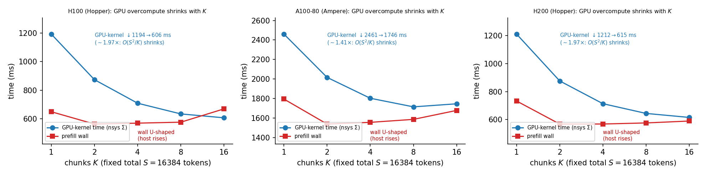

The Whole Story in One Minute
Serving engines chop a long prompt into chunks of at most cs tokens and prefill one chunk per step, so a prompt of S tokens takes K = S/cs steps. A confident folk story says this re-reads an ever-larger KV cache, so attention work — and hence cost — grows with K. That story is algebraically false. Summed over all K chunks at fixed total length S, the exact causal-attention pair count is the SAME as a single causal pass over S: it is independent of K. The only chunking artifact in the exact FLOP count is a rectangular intra-chunk-mask overcompute of O(S²/K) that shrinks as K grows. So neither attention nor projection compute can drive any cost growth with K — if anything they push against it.
1 · The 'KV re-read grows with K' story is provably wrong
Sum the exact causal attention over all K chunks — each chunk's cs query tokens against its cumulative cache — and the pair count collapses to (S²+S)/2, exactly one causal pass over S. It does not contain K. The cached-key rectangle of one chunk is precisely the work a single pass would have done anyway; chunking re-partitions the causal triangle, it does not enlarge it. Projection GEMMs are K-invariant for the same reason.
2 · The only artifact SHRINKS — and we measure it
The naive 're-read' count overcharges by exactly the intra-chunk rectangular-mask overcompute, ½S²/K − ½S ≈ S²/2K. That term DECREASES as K grows: finer chunks have smaller square tiles relative to the prefix. An nsys sweep at fixed S=16,384 confirms it directly: total prefill GPU-kernel time falls 1194→606 ms (~1.97×) on H100 and 2461→1746 ms (~1.41×) on A100-80 as K:1→16. On-GPU work genuinely falls with finer chunking, on two device generations.
3 · The wall is U-shaped, so optimal chunk size is a trade-off
GPU overcompute falls with K, but a per-chunk host cost rises with K (the scheduler runs once per chunk). The two compete, so the measured wall is U-shaped with an interior minimum — on H100 at fixed S=16,384 the wall is 649, 562, 569, 575, 669 ms for K=1,2,4,8,16 (minimum near K=2), and U-shaped on A100-80 too. The operator takeaway: an optimal chunk size is a measured GPU-overcompute-versus-host trade-off, not the folk rule that 'smaller chunks always cost more.'
4 · Honest secondary: the host residual is descriptive, not a better predictor
Since the compute terms are K-invariant, the small fixed-S wall growth that remains must live in a per-chunk residual. We fold it into a closed-form step model and report, plainly, that as a PREDICTOR it does not beat a K-blind baseline: across 72 cells on three SKUs it raises weighted error (WAPE 5.60% → 7.11%) and is worse on 35/72 cells. We present the residual as a descriptive decomposition with disclosed deviations, not a better latency model. The lasting contributions are the exact algebra and its kernel-level confirmation.

Direct kernel-level confirmation (nsys, eager, fixed total S=16,384 tokens). As the chunk count K rises, total prefill GPU-kernel time FALLS on both a Hopper H100 (1194→606 ms, ~1.97×) and an Ampere A100-80 (2461→1746 ms, ~1.41×) — the O(S²/K) overcompute shrinking exactly as the algebra predicts. The measured wall is U-shaped on both: falling GPU overcompute competes with a rising per-chunk host cost, giving an interior optimum.
What Chunked Prefill Is, and Why the 'Re-Read' Story Is Wrong
No background is assumed. Three ideas carry the rest of the page: what prefill is, what chunked prefill actually changes, and why the tempting 'KV re-read grows with K' intuition is algebraically false.
Prefill: read the whole prompt before writing a word
Before a model emits its first token it must run a forward pass over the entire prompt to build the key/value cache that later decode steps read from. This is prefill, and for a long prompt it is the dominant cost of time-to-first-token. Done in one pass, attention reads each token against every earlier token exactly once — the familiar lower-triangular cost, (S²+S)/2 query-key pairs.
Chunked prefill: feed the prompt cs tokens at a time
A single huge prefill step monopolizes the GPU and stalls every decode request co-located on the same engine. Sarathi-style chunked prefill fixes this by capping the per-step token budget at cs tokens and feeding the prompt one chunk at a time, so a prompt of S tokens takes K = ⌈S/cs⌉ prefill steps. The chunk size cs is the dominant serving knob: smaller cs protects co-located decode latency, but it means more steps. Chunk i then attends over a key/value cache that has grown to i·cs tokens — which is exactly where the 're-read grows with K' intuition takes hold.
The exact causal work is independent of K (the correction)
Sum the exact causal attention over all K chunks. Chunk i charges cs query tokens against (i−1)·cs cached keys (a rectangle) plus its own lower triangle. Adding these up over i = 1…K telescopes to (S²+S)/2 — exactly one causal pass over S, with no K in it. Chunking re-partitions the causal triangle into rectangles and triangles; it does not enlarge it. Projection GEMMs are K-invariant for the same reason (K chunks of cs tokens push the same total tokens through the same dense GEMMs as one pass of S).
The naive 're-read' count instead charges chunk i the FULL rectangle cs×(i·cs), giving ½cs²K(K+1). The difference from the exact count is the only chunking artifact in the FLOP count — an intra-chunk rectangular-mask overcompute that scores the full cs×cs current-chunk tile instead of its lower triangle:
This overcompute DECREASES as K grows (finer chunks have smaller square tiles relative to the prefix), so even the one kernel-level chunking artifact works against any cost growth. Attention, however you count it, cannot be the source of a fixed-S increase. The next section measures this directly at the kernel level.

Fixed total prompt (16,384 tokens, H100). The served-grid wall is modest and U-shaped in the chunk count K (minimum near K=2), while a K-blind single-pass reference is flat. The wall is not a monotone penalty: the falling GPU overcompute competes with a rising per-chunk host cost.
Measure the Correction at the Kernel Level
The primary result is the algebra of the previous section: at fixed total length S the exact prefill compute is K-invariant, and the only FLOP-count artifact is an O(S²/K) overcompute that shrinks in K. The primary EVIDENCE is a direct, kernel-level measurement that this overcompute really shrinks as predicted — replicated on two architectures. A secondary construction then folds the leftover per-chunk residual into a closed-form step model, which we characterize honestly rather than sell as a predictor.
Kernel-level confirmation: on-GPU work falls as K grows
Per SKU we run an nsys sweep at fixed S=16,384 (K ∈ {1,2,4,8,16}, eager) and read off, per K, the prefill wall and the total GPU-kernel time (cuda_gpu_kern_sum). On the Hopper H100 the total prefill GPU-kernel time falls from 1194 ms at K=1 to 606 ms at K=16 — a ~1.97× drop (the full sequence is 1194, 874, 708, 633, 606 ms over K=1,2,4,8,16), nearly halving the on-GPU work as the O(S²/K) overcompute vanishes. On the Ampere A100-80 the same direction holds: 2461→1746 ms (~1.41×; 2461, 2017, 1803, 1714, 1746 ms). This is a measurement of the corrected algebra at the kernel level — finer chunking genuinely reduces on-GPU work, the opposite of the 're-read' intuition — and it does so on both device generations, exactly as an exact-FLOP property of the causal mask must.
Why the wall is U-shaped: a per-chunk host cost rises with K
The measured wall is not monotone — it is U-shaped on both SKUs (H100 wall 649, 562, 569, 575, 669 ms over K=1,2,4,8,16; A100-80 1795, 1538, 1556, 1586, 1678 ms). The falling GPU overcompute competes with a per-chunk host cost that rises with K: the scheduler runs one iteration per chunk (dequeue, paged-KV-block management, per-layer kernel-argument build, launch), which in eager execution sits on the critical path once per chunk and does not divide by GPU FLOPs. A direct nsys decode split makes that host floor concrete: an 8B H100 decode step is 6.41 ms of GPU kernel time plus 5.78 ms of host-exposed (launch + Python-scheduler) time — 47% of the step. The same non-overlapped host work, paid once per chunk, is what bends the U upward at large K.

The directly-measured host floor (nsys decode split, eager, N=1, ctx 2048). On H100 the 8B decode step is 6.41 ms GPU + 5.78 ms host-exposed (47%); the floor is model-size-invariant (5.56 ms at 1B). This is the non-overlapped per-step host cost that, paid once per chunk in prefill, rises with K and makes the wall U-shaped.
Secondary: a descriptive closed-form decomposition
Because the three compute terms are K-invariant at fixed S, any residual fixed-S wall growth must live in a per-chunk term K·h that does not divide by GPU FLOPs. We fold it into a closed-form step model with one fitted chunked-attention efficiency η̄ₐ (calibrated on H100 only) and a residual slope from a separate chunk-size sweep. We do NOT claim to have profiled this residual as host time on the prefill path: K-linearity and FLOP-independence alone cannot distinguish a host/CPU cost from GPU-side per-launch overhead or a small cs-dependent on-GPU inefficiency. So we treat K·h as a descriptive residual, not a measured host term.
Measurement protocol
All measurements are fresh runs on the PACE Phoenix cluster (H100-80GB, H200, A100-80GB nodes, vLLM 0.19.1.dev, PyTorch 2.10+cu126, eager execution), serving Llama-3.1-8B-Instruct with chunked prefill enabled and prefix caching disabled (so the full prompt is prefilled, exercising the chunked path cleanly), one request at a time. Each job captures a reproducibility record (git SHA, conda environment, GPU UUID/driver) at submit time.
The Algebra Holds; the Residual Is Not a Better Predictor
Primary: the exact compute is K-invariant; the GPU artifact shrinks
The central evidence is the kernel-level measurement, and it holds on two architectures. At fixed S=16,384 the total prefill GPU-kernel time falls as K:1→16 on both a Hopper H100 (1194→606 ms, ~1.97×) and an Ampere A100-80 (2461→1746 ms, ~1.41×) — the O(S²/K) overcompute shrinking exactly as the algebra predicts. On-GPU work decreases with finer chunking on every SKU we measure; the 'KV re-read grows with K' story is refuted both in the exact FLOP count and in measured kernel time on two device generations. This is robust to the prefill kernel overlap that makes a clean wall−GPU host split unavailable for prefill (the large kernels run concurrently, so the kernel-time sum exceeds the wall).
| SKU (arch) | K=1 | K=2 | K=4 | K=8 | K=16 | drop |
|---|---|---|---|---|---|---|
| H100 (Hopper) — GPU-kernel ms | 1194 | 874 | 708 | 633 | 606 | ~1.97× |
| A100-80 (Ampere) — GPU-kernel ms | 2461 | 2017 | 1803 | 1714 | 1746 | ~1.41× |
| H100 — wall ms (U-shaped) | 649 | 562 | 569 | 575 | 669 | min K=2 |
| A100-80 — wall ms (U-shaped) | 1795 | 1538 | 1556 | 1586 | 1678 | min K=2 |
nsys sweep at fixed total S=16,384 tokens, eager. GPU-kernel time FALLS as K rises on both arches (the O(S²/K) overcompute shrinking); the wall is U-shaped with an interior minimum near K=2. The wall is not a monotone penalty.
The compute terms are forced flat by the algebra
Because the projection GEMM, causal attention, and light terms are exactly K-invariant at fixed total length (Eq. 1), any small fixed-S wall growth that remains is FORCED into the per-chunk residual — it cannot be attention or projection compute. The decomposition below shows where that growth can sit under the corrected algebra; it is the algebra's accounting, not a profiled host/GPU split (the modeled residual averages only ~8.6% of the measured wall). The rectangular-mask overcompute of Eq. 2 is a small, decreasing correction we do not charge separately; including it would only push harder against the observed growth.

Compute terms are forced flat by the algebra (H100, total 40,960 tokens). By Eq. 1 the projection GEMM, causal attention, and light terms are exactly K-invariant at fixed total length, so any fixed-S growth is forced into the per-chunk residual K·h. This is the algebra's accounting, not a profiled host/GPU split.
Operator implication: optimal chunk size is a trade-off, not a penalty
Combining the two effects gives the practical takeaway. Finer chunking lowers on-GPU overcompute (~1.97× over our H100 sweep) while raising the per-chunk residual, so the wall is U-shaped with an interior minimum (here near K=2 at S=16,384). The optimal chunk size is therefore a measured GPU-overcompute-versus-host trade-off whose location depends on the host's per-chunk cost relative to device throughput — and NOT the folk rule that smaller chunks always cost more. This is a qualitative, regime-scoped guide (single request, eager, prefix caching off, this hardware), not a millisecond forecast.
Fixed total prompt (16,384 tokens, H100). The served-grid wall is modest and U-shaped in the chunk count K, while the K-blind single-pass reference is flat. The closed-form residual term tracks the small remaining growth — but this is a description, not a predictive win.
Secondary / limitation: the residual is not a better predictor
Treated as a latency PREDICTOR, the closed-form decomposition does not beat the K-blind baseline — we report this as a limitation of the predictor framing, not a result in its favor. We lead with weighted error because the latency spans ~697× (27.5 ms to 19,182 ms), so equal-weighted mean MAPE credits a 28 ms cell as much as a 19 s cell. On WAPE the closed form is WORSE than the K-blind reference: across all 72 cells WAPE rises from 5.60% (naive) to 7.11% (model), and the model is worse than naive on 35 of 72 cells (29 of 48 held-out). It carries a large negative signed bias — it systematically under-predicts the largest cells. We therefore make no claim of a better latency model; the contribution is the algebra and its kernel-level confirmation.

Secondary, limitation: per-SKU error of the descriptive closed-form decomposition vs the K-blind reference, on WAPE (weighted) and equal-weighted mean MAPE. Treated as a PREDICTOR the closed form is worse than the K-blind baseline on WAPE for both held-out SKUs (H200, A100-80), improving only on the calibration SKU. The residual is a description, not a better latency model.

All 72 cells, three SKUs (log–log). Held-out SKUs are open markers. Over the 697× wall range the closed form is order-correct but biased low: points sit below the diagonal at the high end — the systematic under-prediction of the largest cells that drives the worse-than-naive weighted and absolute error.
A Clean Correction and a Trade-Off, Not a Penalty
The value of the result divides by audience. For model builders it is a clean, citable correction to a common mechanism; for operators it reframes the chunk-size knob as a measured trade-off with an interior optimum, not a one-way penalty.
For model builders
The 'KV re-read grows with K' mechanism, used to justify charging chunked attention by chunk count, is algebraically wrong: the exact causal pair count over a K-chunk prefill equals a single causal pass over S, and the only FLOP-count artifact is an O(S²/K) overcompute that SHRINKS with K. Any latency model that re-charges attention per chunk has a citable counterexample here, confirmed at the kernel level on two arches. We deliberately do NOT claim a better predictor than existing models — our descriptive residual loses to a K-blind baseline on weighted error, and we say so.
For operators
Smaller chunks do NOT always cost more. Finer chunking reduces on-GPU overcompute (nearly halving it on H100) while raising a per-chunk host cost, so the prefill wall is U-shaped with an interior minimum (near K=2 in our sweep). The right chunk size is a measured GPU-overcompute-versus-host trade-off whose location depends on the host's per-chunk cost relative to device throughput — smaller on a compute-rich Hopper host, larger on an Ampere host. Choose the chunk size by measuring the U, not by assuming a monotone penalty.
This page is part of a portfolio on the host term in LLM serving — the non-overlapped CPU/scheduler cost that does not divide by GPU work and shows up differently across tensor parallelism, chunked prefill, speculative decoding, CUDA-graph capture, and FP8. Here it is the per-chunk cost, paid K times, that bends the prefill wall upward at large K. Back to the host-term portfolio →
Exactly What Was Measured
The claims are deliberately bounded. Each item names a specific way the result could be over-read and the precise scope that remains valid.
- The residual is a description, not a predictor. Treated as a latency predictor the secondary closed-form decomposition is worse than the K-blind baseline on weighted error (WAPE 5.60% → 7.11% over 72 cells; worse on 35/72 cells), improving only on the calibration SKU. We make no predictor claim; the contribution is the algebra and its kernel-level confirmation.
- The per-chunk residual is not attributed to host time by direct measurement. We do not attach a CPU/scheduler trace separating host from GPU time on the prefill chunk path; K-linearity and FLOP-independence alone cannot distinguish a host/CPU term from GPU-side per-launch overhead or a small cs-dependent on-GPU inefficiency. We describe it as a per-chunk residual and disclose the ambiguity. (The 47% host floor cited above is a direct nsys DECODE split — a different workload, used as context, not to quantify the prefill residual.)
- A constant per-chunk cost is only a first-order approximation. The measured per-extra-chunk cost varies by 0.14×–2.86× the constant prediction across configurations, and is super-linear in K in several families, so even the residual's quantitative form is approximate.
- Eager execution and single request. We measure eager mode with one request at a time, which isolates the per-chunk mechanism cleanly; CUDA-graph capture and co-batched decode (mixed steps) overlap part of the residual and are out of scope.
- Prefix caching disabled. We disable prefix caching so the full prompt is prefilled; with caching the cached prefix is skipped, which changes K but not the exact-FLOP algebra.
- One model; kernel sweep on two of three SKUs. The study covers Llama-3.1-8B-Instruct only. The direct GPU-kernel-drop measurement is on H100 and A100-80 (Hopper and Ampere); an H200 replication is in progress as a third SKU. The shrinkage is an exact-FLOP property of the causal mask, so it must hold on every device.
The conclusions hold for Llama-3.1-8B-Instruct in BF16 on the single-GPU PACE SKUs H100, A100-80, and H200, in eager mode with prefix caching disabled, one request at a time. The lasting contributions — the exact K-invariance correction (the chunked causal pair count equals a single-pass count, the only artifact being an O(S²/K) overcompute that shrinks in K) and its direct kernel-level confirmation on two architectures — are the parts expected to generalize. The closed-form residual decomposition is offered honestly as a description, not as a better latency predictor.